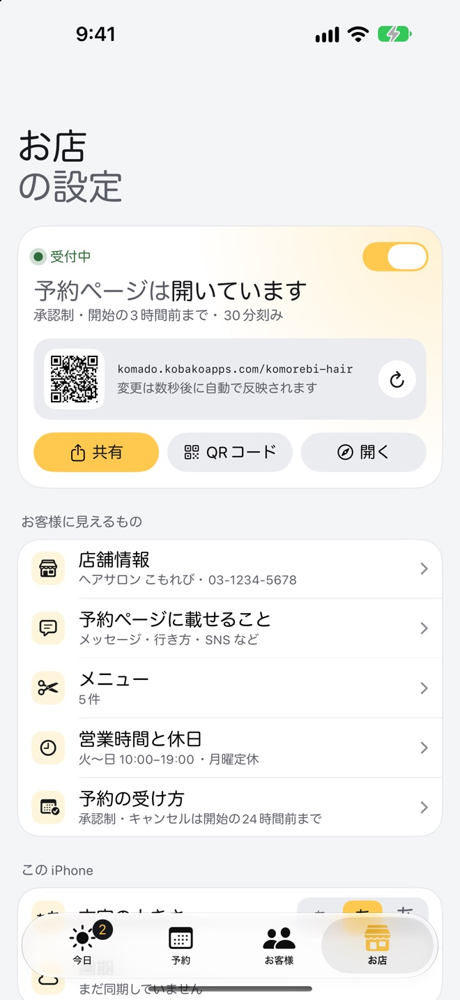
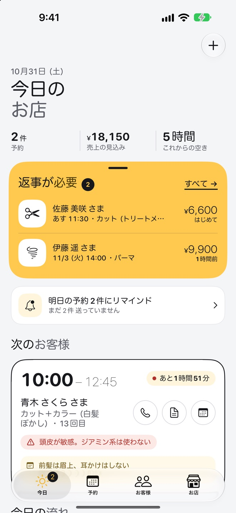
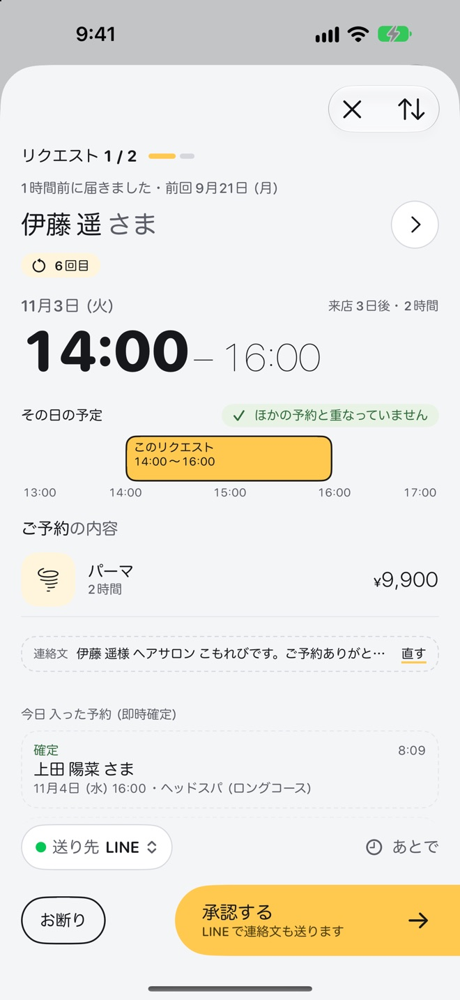
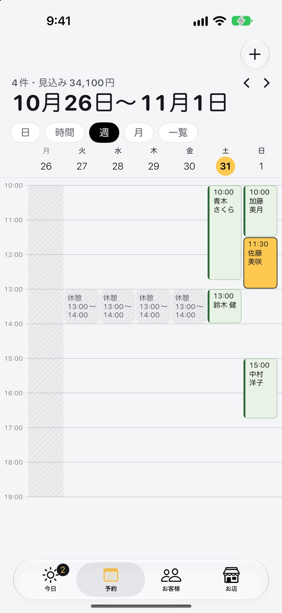
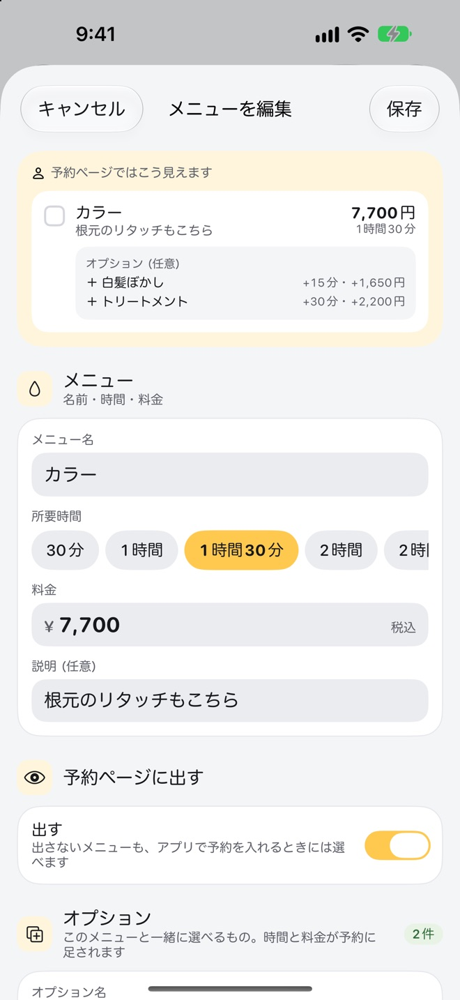
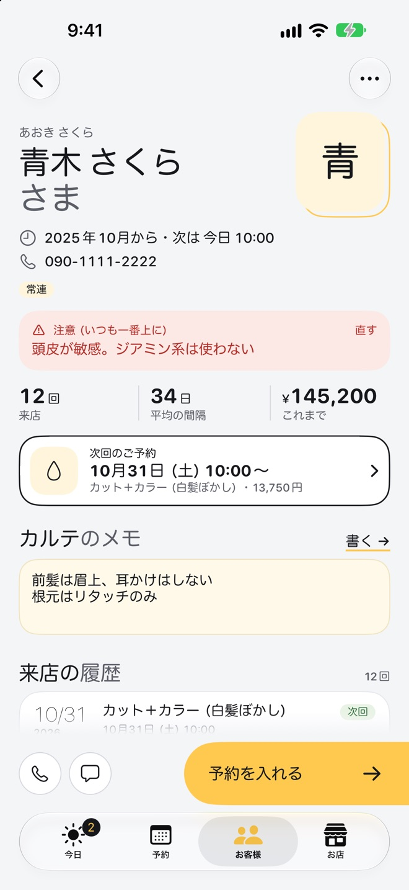
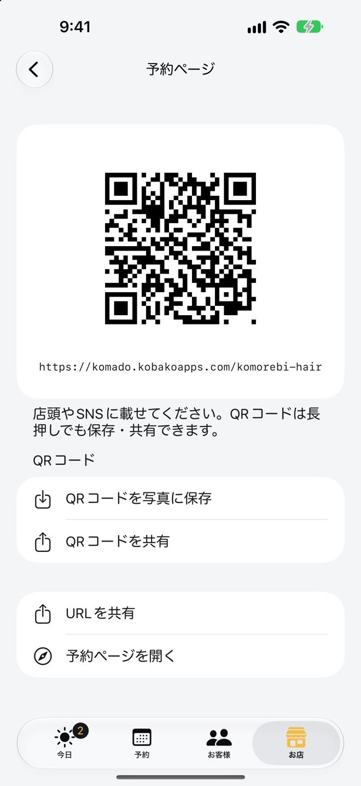

お店の予約ページを、
すぐに公開
店舗名とメニュー、営業時間を入れれば、お店専用の予約ページができあがります。設定を変えると、数秒で予約ページにも反映されます。
komado.kobakoapps.com/あなたのお店- 承認制か即時確定か、受付の締め切り、キャンセルの期限を決められます
- 予約ページに載せるメッセージ・行き方・SNS のリンクも書けます
- 「受付中」のスイッチひとつで、受け付けを一時的に止められます

接客中や作業中は電話に出られず、気づいたら予約の電話を逃していた。Komado（こまど）は、1人や少人数で営む小さなお店に、自分だけの予約ページを用意するアプリです。お客様はブラウザから空いている時間を選んでリクエストし、あなたは手が空いたときにアプリで返事をするだけです。
App Store で近日公開iPhone・iPad／お客様はアプリもアカウントの登録も不要です

お店の予約ページで、空いている時間を選ぶだけ。アプリも登録も要りません。
届いたリクエストに、接客の合間に承認かお断り。連絡文もそのまま送れます。
お名前や電話番号は暗号化して届きます。開発者も中身を読めません。
予約ページに出るのは、営業時間・休憩・定休日と、電話や来店で受けた予約まで差し引いた、本当に空いている時間だけ。ダブルブッキングの心配がありません。
メニューとオプションを選ぶと、その長さで入れる時間だけが出ます。
通知が届いたら、手が空いたときに承認かお断り。即時確定にもできます。
返事を確かめ、お店の決まりの範囲でキャンセルや日時の変更ができます。
予約の受け付けから、今日の流れ、お客様のカルテまで。紙の予約表と電話でやってきたことを、iPhone ひとつにまとめます。
店舗名とメニュー、営業時間を入れれば、お店専用の予約ページができあがります。設定を変えると、数秒で予約ページにも反映されます。
komado.kobakoapps.com/あなたのお店
届いたリクエストは、その日の予定と並べて表示します。ほかの予約と重なっていないかを確かめて、承認するだけ。確定の連絡文は LINE・メッセージ・メールでそのまま送れます。

予約は日・時間・週・月・一覧で見わたせます。電話や来店で受けた予約もここに追加でき、その時間は予約ページからも自動で埋まります。

メニューごとに、時間と料金を持つオプションを付けられます。お客様は複数のメニューとオプションを組み合わせて予約でき、時間と料金は合計で計算します。

来店の履歴、カルテのメモ、気をつけること（アレルギーや苦手なこと）を記録できます。気をつけることは、カルテのいちばん上と、「今日」の次のお客様の欄に出ます。
⚠ 頭皮が敏感。ジアミン系は使わない
予約ページの QR コードを写真に保存して、店頭のポップやショップカードに。URL は Instagram のプロフィールや LINE の公式アカウントにそのまま貼れます。

1日の受付の上限、受付の締め切り、キャンセルや変更の期限、予約のあとの片付け時間を設定できます。
ホーム画面とロック画面で、次のお客様と返事待ちの件数を確かめられます。
同じアカウントの iPhone と iPad で、予約・お客様・店舗の設定が自動で同期します。複数の店舗も1つのアプリで管理できます。
予約ページで入力されたお名前や電話番号は、お店の端末にしかない鍵で暗号化してから届けます。予約サーバーは暗号文を受け渡すだけで、開発者も中身を読めません。予約やカルテは店主ご自身の iCloud に保存され、広告や解析の仕組みも入っていません（プライバシーポリシー）。
Web 予約を始めたい。でも、大きな予約サービスは月々の費用が重く、使わない機能も多い。電話や SNS のメッセージで受けた予約を、紙の予約表に書き写すのも手間がかかる。
Komado は、予約ページと予約台帳をひとつのアプリにまとめました。予約台帳やカルテはプランなしで使え、費用がかかるのは Web 予約を受け付けるときだけです。美容室やネイル、整体、教室やレッスン、相談の窓口まで、予約で動くお店なら業種を問わずお使いいただけます。
予約の管理、お客様のカルテ、メニューや営業時間の設定は、プランがなくても使えます。予約ページで Web 予約を受け付けるときだけ、プラン（自動更新のサブスクリプション）が必要です。
お支払いなしで使える範囲
月額・年額
月額・年額
料金はアプリの購入画面でご確認ください。プランは同じ Apple アカウントの iPhone と iPad で共有されます。
店舗名とメニューを入れるだけで、予約ページができあがります。
App Store で近日公開